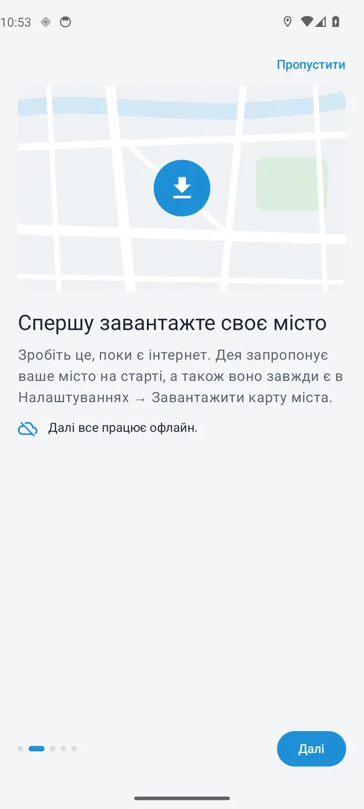
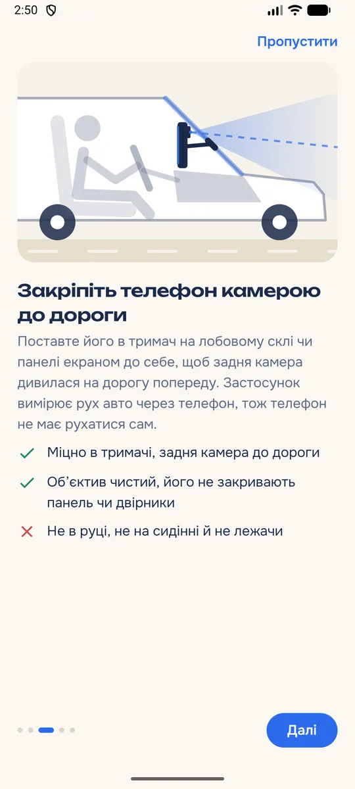
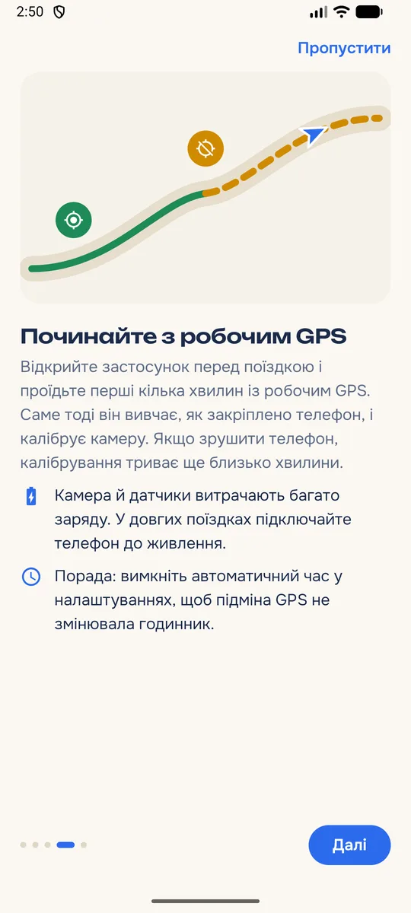
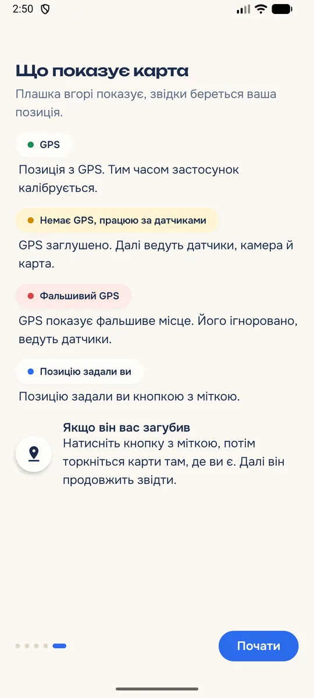

Навігатор, який знає, де ви, навіть коли GPS бреше
Дея тримає вас на карті, коли сигнал GPS глушать або підмінюють. Вона рахує рух авто за датчиками телефона й задньою камерою та звіряє його з офлайн-картою вашого міста.
Безкоштовно · Android 8.0 або новішийЯк це працює
Три джерела замість одного супутника
Звичайний навігатор сліпне, щойно GPS зникає або показує, що ви в аеропорту. Дея продовжує вести вас, бо знає, як рухається авто і якими дорогами воно може їхати.
Датчики руху
Гіроскоп і акселерометр телефона відстежують кожен поворот, розгін і зупинку.
Задня камера
Дивиться на дорогу попереду й вимірює швидкість. Кадри аналізуються в пам’яті та одразу зникають.
Офлайн-карта
Дороги з OpenStreetMap лежать на телефоні. Позиція завжди «прилипає» до справжньої дороги.
GPS у нормі. Дея веде за ним і тим часом калібрує датчики та камеру.
Сигнал заглушено. Далі ведуть датчики, камера й карта.
GPS показує чуже місце. Дея помічає підміну й не дає їй збити вас з маршруту.
Перша поїздка
Готово за чотири кроки
Знадобиться тримач для телефона на лобовому склі або панелі. Інтернет потрібен лише один раз, щоб завантажити карту.

Завантажте місто
Поки є інтернет. Після цього все працює офлайн.

Закріпіть телефон
У тримачі, екраном до себе, щоб задня камера дивилася на дорогу.

Почніть з робочим GPS
За першу хвилину-дві Дея калібрує камеру й датчики під ваше авто.

Їдьте спокійно
Плашка вгорі завжди показує, звідки береться ваша позиція.
Відео
Подивіться, як Дея шукає дорогу
Хмара з тисяч можливих позицій, кожна на справжній дорозі. Що далі ви їдете, то точніше Дея знає, де ви.
Приватність
Камера дивиться на дорогу, а не в інтернет
Камера потрібна, щоб Дея працювала без GPS. Тому зображення з неї ніколи не залишають ваш телефон.
- Фото й відео нікуди не надсилаються.
- У застосунку немає облікових записів, реклами й аналітики.
- Визначення місця й навігація працюють без інтернету.
Питання
Часті запитання
Чи потрібен інтернет?
Лише щоб завантажити карту свого міста. Далі Дея визначає місце й прокладає маршрут повністю офлайн.
Який телефон підійде?
Смартфон на Android 8.0 або новішому, з задньою камерою, гіроскопом і акселерометром. Майже всі сучасні телефони мають їх.
Наскільки точно без GPS?
У місті, де багато поворотів, Дея зазвичай тримає вас на правильній вулиці. На довгих прямих дорогах без поворотів похибка поступово росте, а щойно з’являється поворот чи справжній GPS, позиція знову уточнюється. Якщо Дея загубилася, торкніться кнопки з міткою й покажіть на карті, де ви.
Чи сильно сідає батарея?
Камера й датчики працюють увесь час поїздки, тож у довгих поїздках краще тримати телефон на зарядці.
Чому саме «Дея»?
Від мему з вівцею, яка питає «Де я?». Тепер у неї є відповідь.
Будьте на карті, навіть коли GPS немає
Завантажте Дею прямо з цього сайту. У Google Play вона з’явиться згодом.
Android 8.0 або новіший- Завантажте файл кнопкою вище на телефоні з Android.
- Відкрийте його зі сповіщення або з папки «Завантаження».
- Дозвольте встановлення. Android попросить дозволу встановлювати застосунки з браузера: натисніть «Налаштування» й увімкніть «Дозволити з цього джерела».
- Натисніть «Встановити». Якщо Play Protect попередить про невідомий застосунок, оберіть «Усе одно встановити».
Оновлення теж з’являтимуться тут: просто завантажте й встановіть нову версію поверх старої. Усі версії
Поділіться досвідом
Розкажіть, як Дея впоралася у вашому місті, що заважає й чого бракує. Читаємо все.